Product Design · Cuemath · 2025–26
Feel Check gave every tutor a consistent signal before instruction began. 65.64% observed improved student readiness after regulation.
Cuemath tutors had no visibility into how students arrived emotionally — instruction began regardless of state, and dysregulation only showed up after it had already disrupted the session. I designed Feel Check: a student-led, four-stage pre-session check-in that identifies a student's emotional state and guides them to a self-chosen regulation activity before the lesson begins. Across 417 students and 120 tutors over four cohorts, 89.3% of students chose their emotion without tutor prompting.
When a student arrived dysregulated — tired, distracted, carrying the weight of a long day — the tutor had no way of knowing. The session would start, and whatever was going on with the student would surface mid-problem. Some tutors read the signs quickly and pivoted: a joke, a riddle, a rebus puzzle, anything to loosen the mood and bring focus back. But even when it worked, 20–30 minutes of a 50-minute session would be gone before any real math happened.
This wasn't an edge case. Class recordings showed it regularly, and a dedicated internal tutor cohort — the group Cuemath used to pressure-test ideas before any project reached a spec — confirmed what the recordings suggested: dysregulated students were consistent; tutor responses were not. Every tutor handled it differently. There was no standard.
A student not in an optimal state doesn't learn effectively — and a session that delivers 20 minutes of actual instruction isn't the product Cuemath promised. Weaker sessions meant weaker progress, and weaker progress was one of the primary reasons students churned.
I led product design for Feel Check end-to-end — concept through four cohort rollouts. Of Cuemath's three SEL tools, this was the most complex: a four-stage immersive flow across two grade bands, built from scratch. UX, UI, interaction flow, and all design assets were mine; regulation activity videos were produced by the Motion Designer from a jointly developed brief.
I partnered with the PM on scope trade-offs, Engineering on implementation, Curriculum on content integration, and the Motion Designer on creative direction for the regulation activity videos. Clinical content — vocabulary, emotional options, and regulation activity library — was owned by Roots Consulting. My role was design translation: making a clinical framework work inside a 50-minute math session, not a counselling room. Where vocabulary tested too high-level with students, I flagged it, tested alternatives with the internal tutor cohort, and pushed for revisions. Final clinical call stayed with Roots.
Success criteria agreed upfront: students self-identifying emotion without prompting, tutors observing improved readiness, check-in completing under 5 minutes. One criterion wasn't measured but was central to the intent — that consistent emotional regulation before sessions would, over time, translate into stronger academic performance. We hadn't instrumented a way to measure that connection at launch.
One hard constraint: high asset volume across two grade bands. I descoped animated icons and reduced unique regulation video count for v1 — both planned for v2.
The clinical brief from Roots Consulting specified three science-backed frameworks: Wheel of Awareness (body-first recognition), RULER (emotion labelling), and Zones of Regulation (regulation strategies). These are established and widely used. The design question wasn't whether they worked — it was whether they could work inside a 50-minute math session, self-directed by a child, before any instruction had begun.
I reviewed class recordings and tested the concept early with the internal tutor cohort. What became clear: any flow that felt clinical or adult-directed would be abandoned or resented. The design had to run on student initiative — the tutor needed to be present, but passive. Not a guide. An observer. That single constraint shaped every major decision that followed.
The first build had no background audio on regulation activities. The assumption: visual content — breathing animations, calm sequences — would carry the regulation moment. It didn't. Tutors observed students tapping through activities quickly without settling. The experience felt like a screen, not a transition. Audio wasn't decorative; it was structural. I added ambient audio before external rollout. Average regulation time moved to 1.9 minutes of engaged time — students staying with the activity, not just completing it.
No background audio. Students tapped through the regulation activity quickly — the experience felt like a screen, not a settling moment.
Ambient audio added before external rollout. Avg regulation session: 1.9 min — students engaged with content, not just completing it.
Post-launch, "Do It Your Way" was the dominant first choice across grade levels — 289 selections in the Green zone for G5–8 alone, ahead of every named activity. Students weren't confused or avoiding structure. They were choosing self-direction. This reframed how I thought about the regulation menu: autonomy wasn't a fallback to offer when nothing else worked — it was what students reached for first.
The original scope was G1–8. Early tutor conversations and review with Roots made it clear that naming body sensations and identifying emotional states independently was too demanding for G1–2 — not a simplification problem, but a developmental one. I scoped Feel Check to G3–8. G1–2 is deferred, not dropped.
Before locking the regulation activity experience, I explored three directions with the Motion Designer: fully abstract visuals, character-driven sequences, and non-humanistic partial elements — rain, breathing patterns, ambient light. The non-humanistic approach was chosen: neutral, non-projecting, and focused on physical sensation rather than a character to follow.
Four decisions that defined how Feel Check works.
Decision 01
Tutor as observer, not director
Every selection belongs to the student. The tutor sees the same screen in real time but cannot tap or control anything. I considered a fully private design — no tutor view at all — but for a student who is dysregulated, being left alone with something unfamiliar adds load. The tutor-student relationship at Cuemath runs deep. I kept the tutor present but removed their control. Student owns the selection. Tutor owns the exit.
Post-launch, 89.3% of students chose their emotion without tutor prompting, even with live AV throughout.
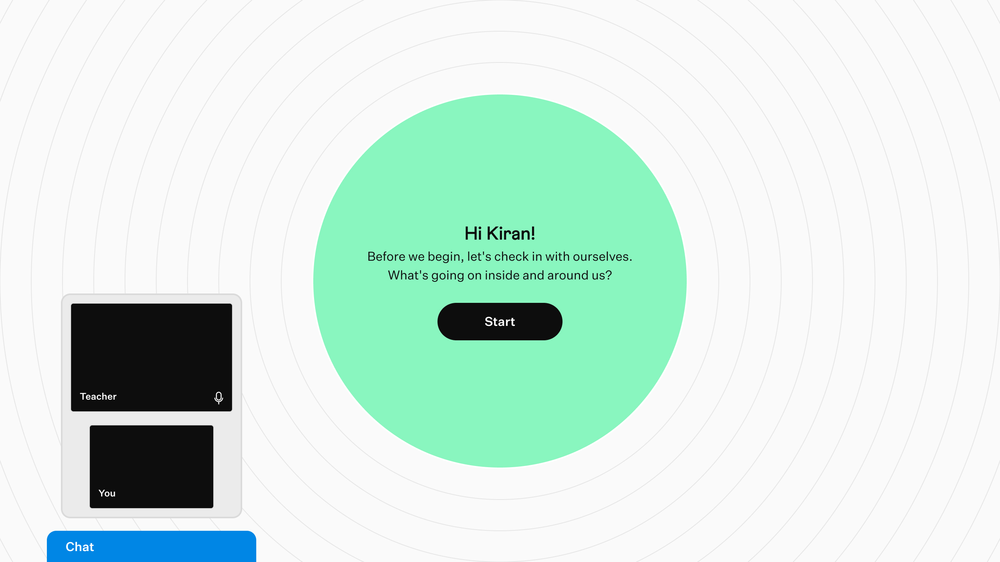
The student sees the full-screen interface. The tutor sees the same view — read-only, no controls.
Decision 02
The sequence mirrors how awareness builds
Feel Check runs as four stages: Senses → Body → Heart → Mind. Senses is environmental grounding — a warm-up before anything internal is named. Each stage progressively narrows: Body informs Heart, Heart informs Mind.
I explored multiple layouts — geometric grids, modals, full-screen flows. I chose the circular form so the Wheel of Awareness could become the interface itself, not a reference diagram placed beside it.
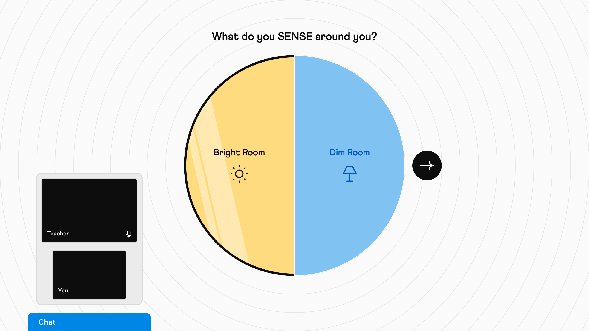
Step 1 — Senses. Environmental warm-up. No filtering consequence.
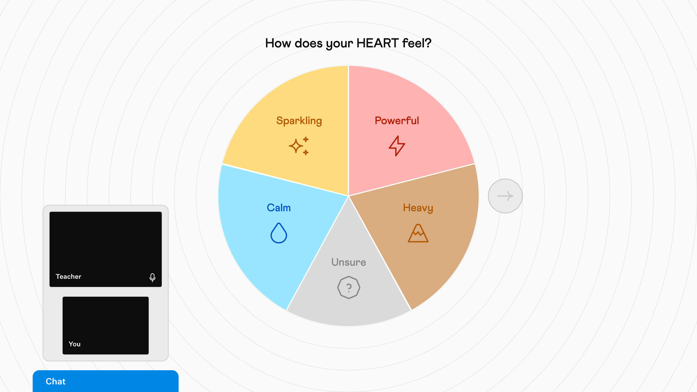
Step 3 — Heart. Emotional awareness. Options filtered by Body state.
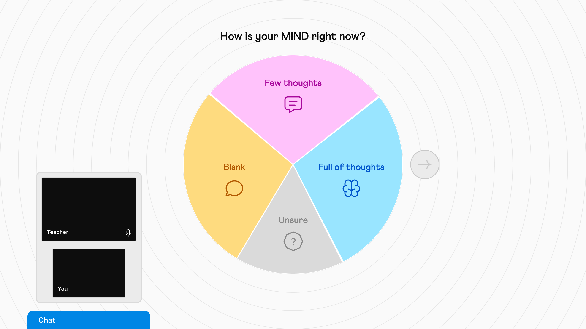
Step 4 — Mind. Cognitive awareness. Options filtered by Heart state.
Decision 03
Two grade bands, not simplified versions
The same UI runs for G3–4 and G5–8. What differs is the set of emotional options and regulation activities — not the visual design, vocabulary, or flow structure. Grade differentiation is itself an accessibility decision: the same emotional framework, made accessible to different developmental stages by adjusting what appears, not how it looks.
G1–2 was ruled out — self-directed emotional identification wasn't developmentally accessible at that age. Not a simplification problem. Deferred, not dropped.
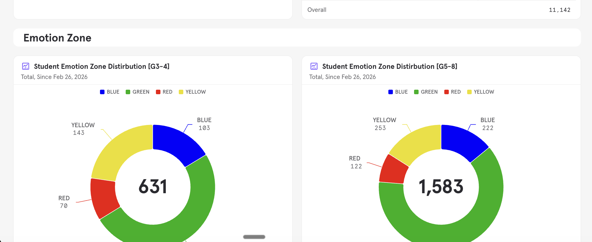
G3–4 — same UI as G5–8, with grade-appropriate emotional options and regulation activities.
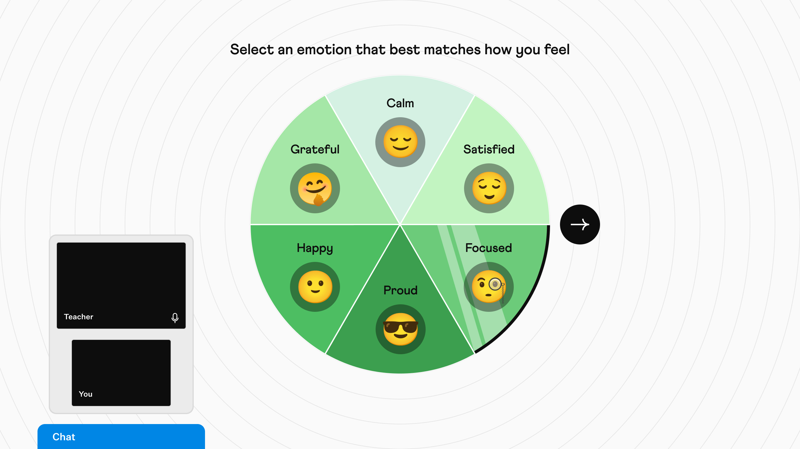
G5–8 — same UI as G3–4, with a different set of emotional options and regulation activities.
Decision 04
"Unsure" as a first-class option
At every stage — Body, Heart, Mind — students could select "Unsure." Fixed in the UI, always present. Not a skip button. When all three stages resolved to "Unsure," students were routed to a curated set of regulation activities. No dead end.
Post-launch: 20–22% of students selected "Unsure" at body awareness — the hardest dimension to name. 264 sessions followed the full Unsure path. Every one resolved.
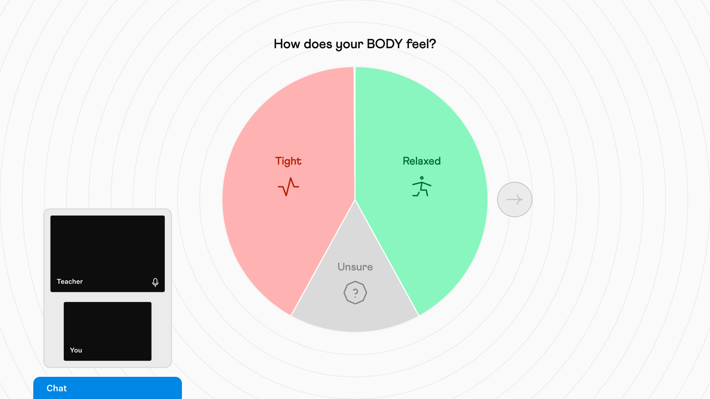
"Unsure" is fixed at every stage — always present regardless of how many primary options the wheel shows. First-class, not a fallback.
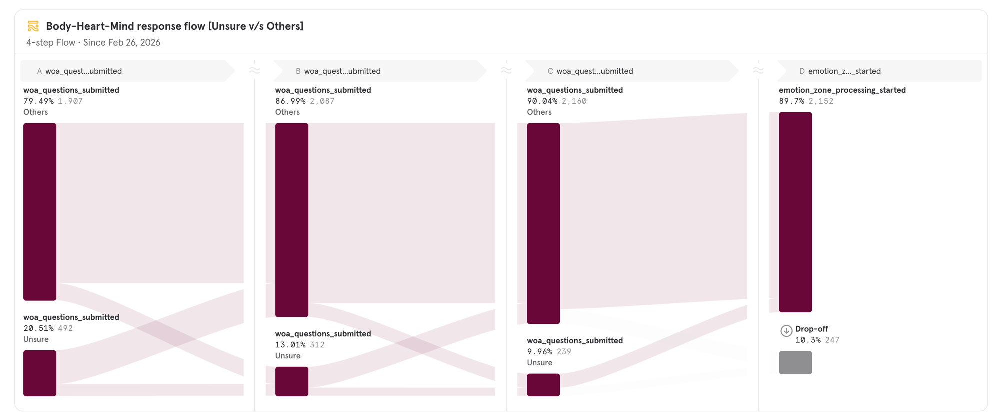
Unsure drops at every stage — 20.51% at Body, 13.01% at Heart, 9.96% at Mind. Naming body sensation first reduces uncertainty at every stage that follows.
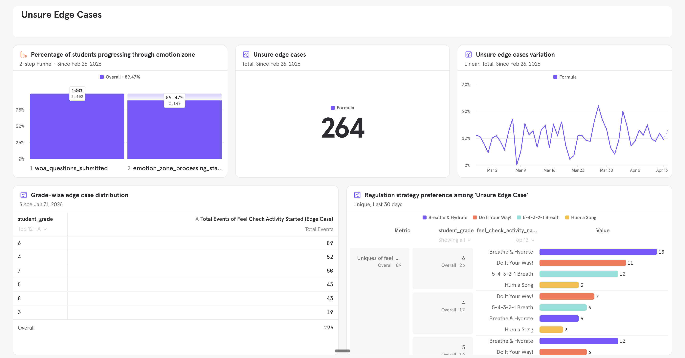
264 sessions followed the full Unsure path. G3–4: 22.3% Unsure on body awareness. G5–8: 20.2%. Every one resolved — no dead ends.
Class session recording · Cohort 3 · Jan–Mar 2026
Activity names were the primary friction point, not the flow. "Sparkling", "Affirmation", and "Set Intention" caused visible hesitation — students asked tutors what they meant or skipped them entirely. The flow worked; the vocabulary didn't. I revised before external rollout: "Affirmation" → "Get Ready!", "Set Intention" → "Set a Goal!"
Read-only activity options were mistaken for interactive ones. Multiple students tapped the regulation activity options repeatedly, expecting them to respond. The affordance wasn't clear — options were meant to be read and then actioned, not clicked. Logged as a UX fix for v2.
Class session recordings · 25 sessions · Feb 2026 · 2 tutors (Sapna Golani, Monika Agrawal) · Researcher-monitored by Aasif
What 120 tutors and 417 students showed across four cohorts — and what the broader rollout confirmed.
Feel Check was validated with 417 students and 120 tutors across four initial cohorts. The rollout continued beyond validation — 3,234 sessions logged across G3–4 and G5–8 since launch. All metrics below are since-launch aggregates.
65.64%
Tutors observed improved student readiness after regulation. The direct answer to the problem Feel Check was built to solve.
89.3%
Students chose their emotion without tutor prompting — the student-led design held in practice.
3.4 min
Average Feel Check duration — from check-in to learning ready. Within the 5-min spec.
95.38%
Tutor feedback submitted per Feel Check. 3s average. The form never interrupted the session.
1.9 min
Average time on regulation — students staying with the activity, not just completing it. Reattempt rate dropped from 21.7% to 13.16% — students choosing the right activity on the first try, more often.
1 in 5
Students couldn't name their body state — the hardest of the four stages. Unsure wasn't a fallback; it was the honest answer.
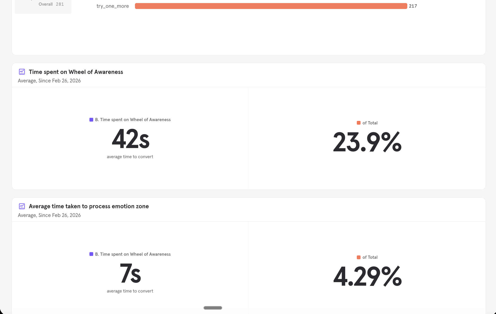
WOA: 42s · Zone processing: 7s — the check-in stage runs in under a minute
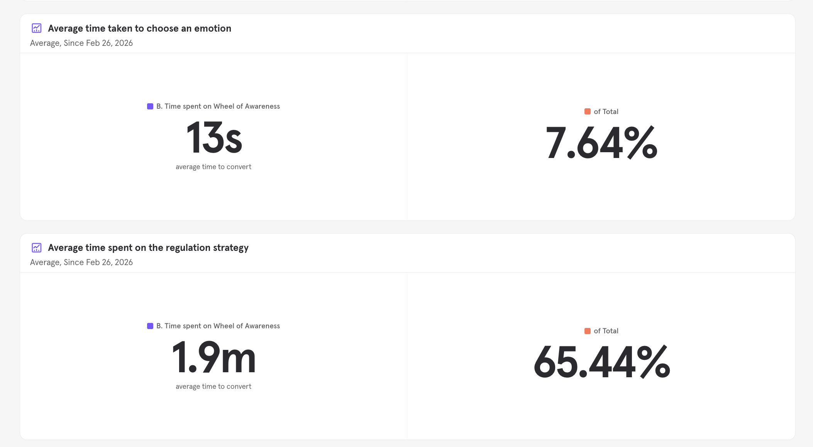
13s to choose an emotion · 1.9 min on regulation (avg, inclusive of reattempts)
After each Feel Check, tutors rated what they could observe directly — student behaviour, not inferred emotional state.
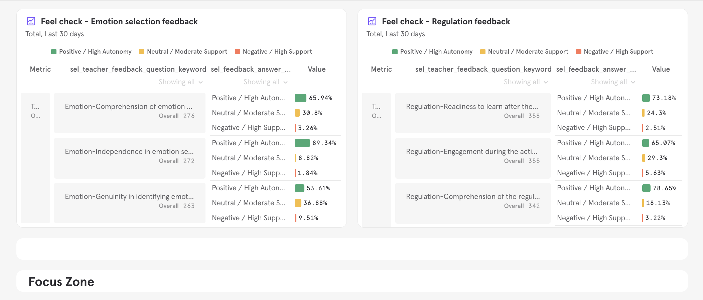
Emotion selection (left) and regulation outcome (right). Tutors rated visible behaviour — not interpretation.
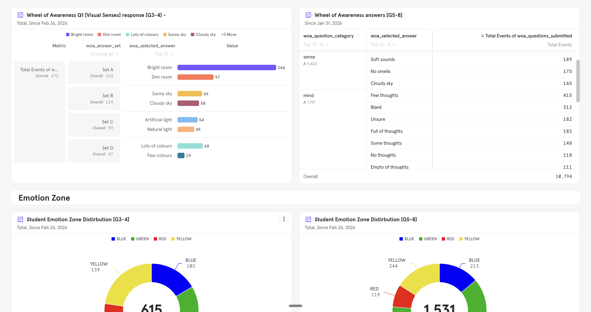
Zone distribution — G3–4 (907 sessions) and G5–8 (2,327 sessions) since launch. Green dominant across both bands — most students arrived calm. But 52% of G3–4 sessions and 40% of G5–8 sessions weren't Green. Feel Check's real value was surfacing that share and doing something about it before instruction began.
Tutor qualitative feedback wasn't systematically retained — access to internal channels was lost after my tenure at Cuemath. The larger gap: Feel Check was built on the premise that emotional regulation before sessions would, over time, improve academic performance. No metric was ever instrumented to prove that connection. Whether the product moved learning outcomes remains unmeasured.
Feel Check solved what it was designed to solve — students arrived at sessions more ready to learn. What we never answered is whether that readiness translated into stronger academic outcomes. That's where v2 starts.
Two things shipped at a quality below what the experience needed: micro-interactions on the selection options across the four stages, and audio on the regulation activities. The options surfacing at each step — Senses, Body, Heart, Mind — felt static where they should feel alive. The audio was generic ambient tracks added after feedback — not designed alongside the content. Both were treated as enhancements and cut for v1. They shouldn't have been. When the regulation activity is the experience itself, sensory quality is design, not polish. Both are v2 priorities.
G1–2 was deferred for the right reason — self-directed emotional identification wasn't developmentally accessible at that age. But deferring without a defined brief for what a G1–2 version would actually need means it stays indefinitely deferred. The next version should start there.
Priority 01
Learning impact — define what it looks like in our own data
Feel Check was built on the premise that emotional regulation before sessions improves academic outcomes. The research supports it. Our data doesn't show it yet — not because the connection doesn't exist, but because we never built a way to measure it. v2 starts here: defining what learning impact looks like in Cuemath's own data before designing anything else.
Priority 02
Purpose-designed motion and audio
Micro-interactions on the selection options across all four stages — purpose-designed motion, not static taps. Regulation activity audio designed alongside the content, not added on top of it. When the experience is the product, sensory quality isn't polish.
Priority 03
G1–2 grade band — designed from the ground up
G1–2 was deferred for the right reason — self-directed emotional identification wasn't developmentally accessible at that age. But deferring without a defined brief for what a G1–2 version would actually need means it stays indefinitely deferred. The next version should start there.